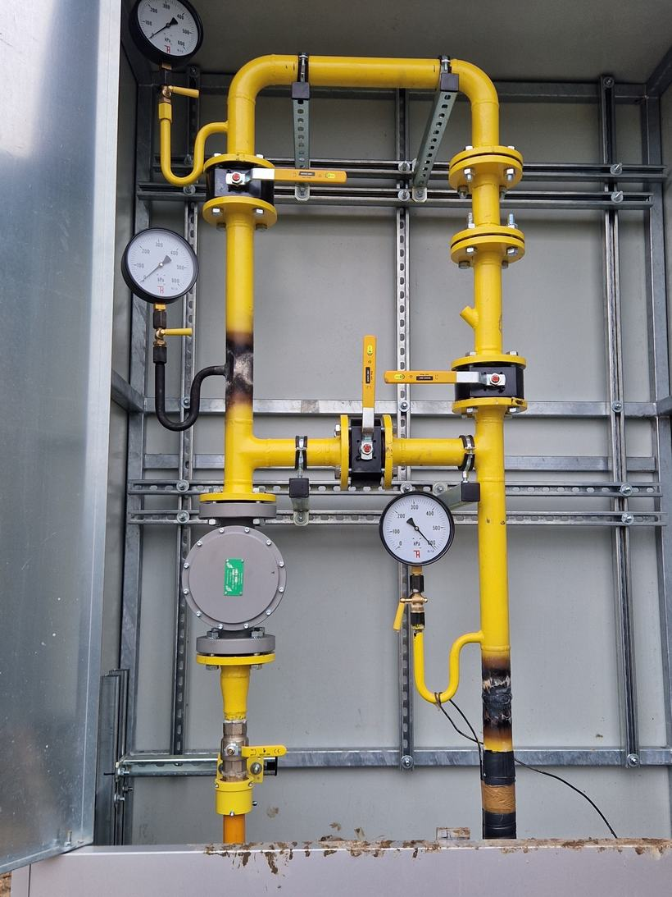
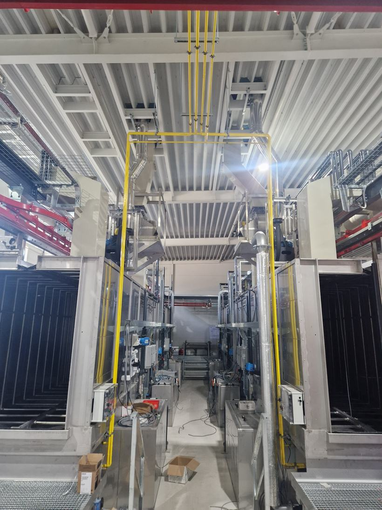
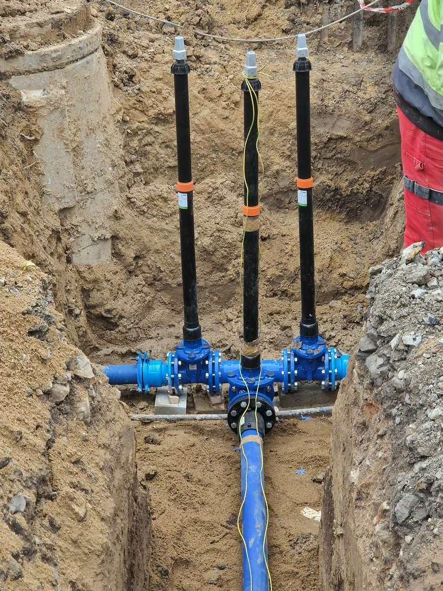
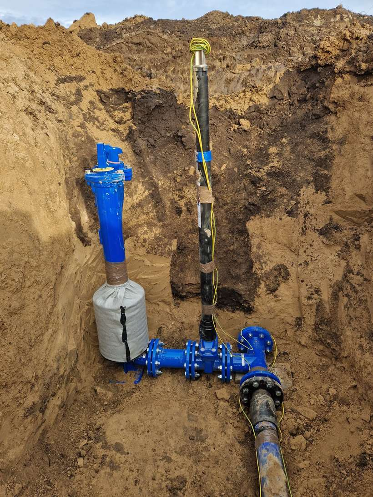
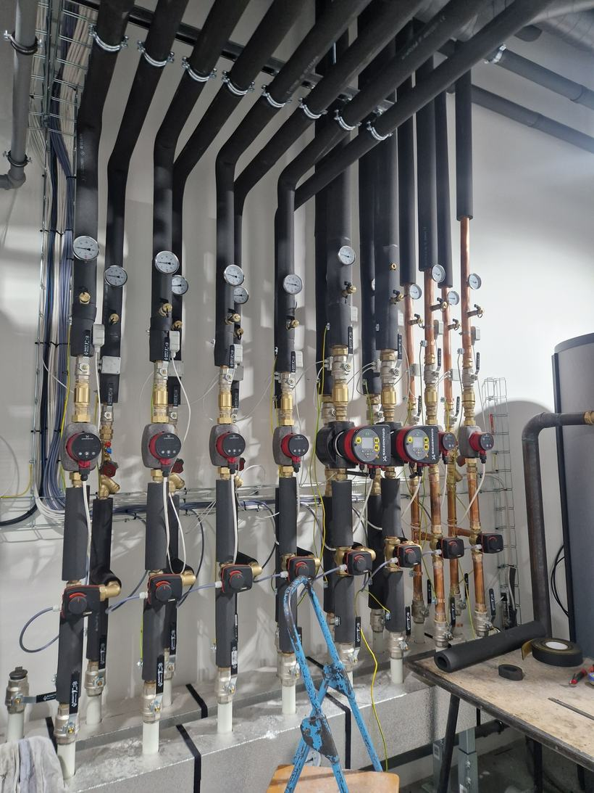
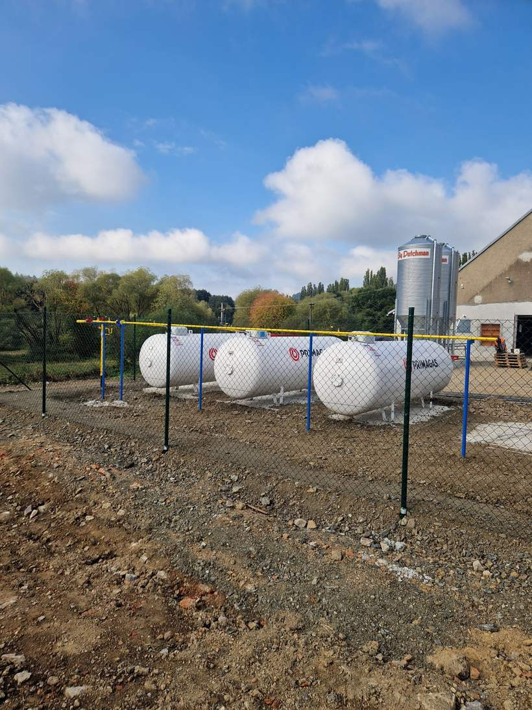
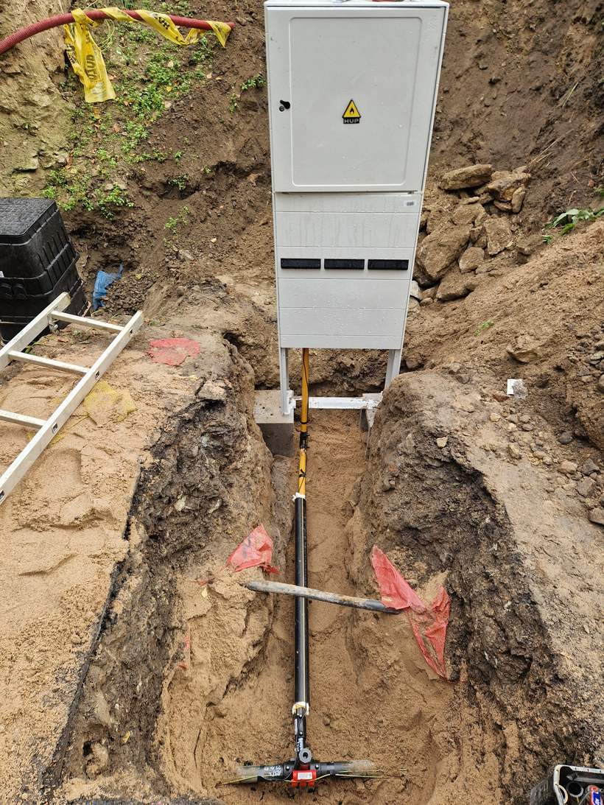
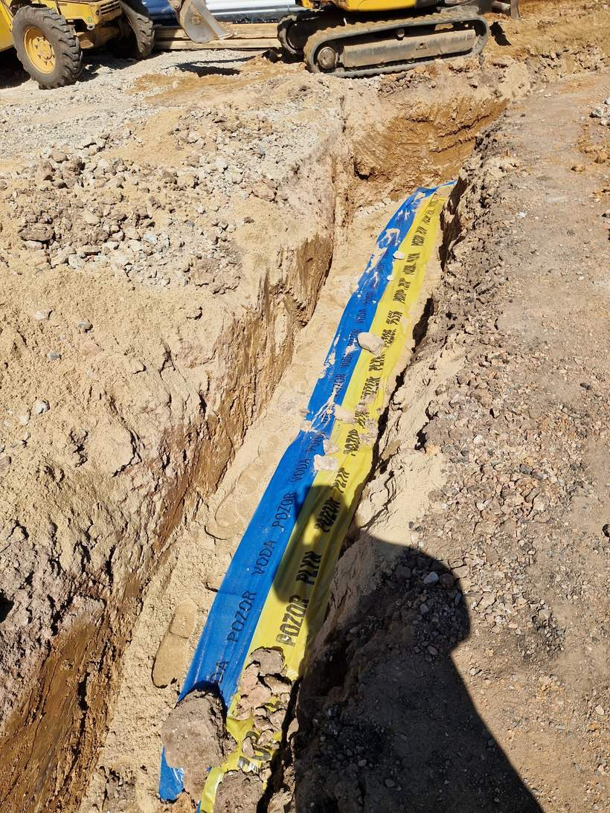

Plynovody, vodovody a kotelny. Od výkopu po výchozí revizi.
Montáž a opravy vyhrazených plynových zařízení — veřejné STL a NTL plynovody, regulační stanice, průmyslové rozvody i plynové hospodářství PB. K tomu vodovody, kanalizace a topné systémy.
Co děláme
Těžiště je v plynu. Zakázku vezmeme od zemních prací přes montáž až po zkoušky a předání dokumentace.
Plynová zařízení
hlavní činnostVeřejné STL a NTL plynovody a přípojky
Nové řady i přípojky včetně napojení na stávající síť, zemních prací a osazení hlavního uzávěru plynu.
Měření a regulace
Regulační a měřicí sestavy, regulační stanice ve skříních i na zdi objektu, osazení měřidel.
Průmyslové a vnitřní plynovody
Rozvody ve výrobních halách a provozech, připojení technologií a spotřebičů, ocelové trasy včetně nátěrů.
Plynovody PB
Rozvody propan-butanu a napojení na zásobníky tam, kde není dostupný zemní plyn.
Plynové hospodářství PB s VTL
Kompletní hospodářství se zásobníky a vysokotlakou částí, typicky pro zemědělské a výrobní areály.
Opravy plynových zařízení
Odstranění závad z revizí, výměny armatur a úseků potrubí, zásahy na provozovaných rozvodech.
Voda, kanalizace a teplo
navazující činnostVeřejné vodovody a přípojky
Vodovodní řady, uzlové body s armaturami, podzemní hydranty a domovní přípojky.
Průmyslové a vnitřní vodovody
Rozvody v halách a objektech, připojení technologií, požární rozvody.
Veřejná kanalizace a přípojky
Gravitační i tlakové stoky, revizní šachty, napojení objektů na stokovou síť.
Topné systémy
Rozvody topení, otopná tělesa a napojení zdroje tepla, zaregulování soustavy.
Kotelny
Kotelny včetně rozdělovačů, čerpadlových skupin, zásobníků a propojení na technologii objektu.
Jak zakázka probíhá
Čtyři kroky. Cenu znáte před zahájením prací a dokumentaci dostanete při předání, ne za měsíc.
Poptávka
Pošlete projektovou dokumentaci nebo popis toho, co je potřeba. Ozveme se s tím, jestli na to máme kapacitu.
Prohlídka a nabídka
Podíváme se na místo, ověříme podmínky napojení a pošleme položkový rozpočet s termínem.
Montáž
Pracujeme podle dokumentace a platných norem, koordinovaně s ostatními profesemi na stavbě.
Zkoušky a předání
Tlaková zkouška, výchozí revize a dokumentace skutečného provedení. Dílo předáváme připravené k provozu.
O firmě
Práce na vyhrazených plynových zařízeních nesnese improvizaci. Děláme je jako hlavní činnost, ne jako přívažek.
SJ Mont Kolín působí od roku 2019. Montujeme a opravujeme vyhrazená plynová zařízení — od veřejných plynovodů a přípojek přes regulační sestavy až po rozvody uvnitř výrobních hal.
Na plynu se nedá nic odbýt a nic schovat. Proto vedle samotné montáže řešíme i to, co k ní patří: zemní práce, uložení potrubí podle norem, tlakové zkoušky a doklady, které bude provozovatel potřebovat při každé další revizi.
Stejný tým dělá i vodovody, kanalizaci, topné systémy a kotelny. Na jedné stavbě tak nemusíte koordinovat několik dodavatelů, kteří na sebe čekají.
Pro koho pracujeme
- Obce a veřejná infrastruktura
- Průmyslové a výrobní areály
- Zemědělské provozy
- Stavební firmy a developeři
Z našich realizací
Průřez tím, co děláme nejčastěji — plyn, voda a technologie uvnitř objektů.








Poptávka a kontakt
Nejrychlejší je telefon. Projektovou dokumentaci pošlete e-mailem, ozveme se s termínem prohlídky.
Ovčárecká 312, 280 02 Kolín
Sídlo firmy — schůzku si prosím domluvte předem. IČO 08761094 · DIČ CZ08761094 · datová schránka kpwjdyg
Zapsáno u Městského soudu v Praze, sp. zn. C 324795
Co nám poslat
- Kde stavba je a o jaký objekt jde
- Projektovou dokumentaci, pokud už existuje
- Tlakové pásmo a profil potrubí, když je znáte
- Termín, do kdy má být dílo hotové
Pokud dokumentaci nemáte, nevadí. Stačí popsat, co má zařízení dělat, zbytek probereme na místě.